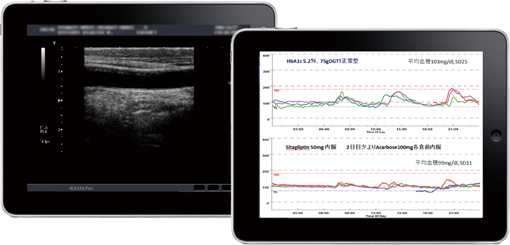
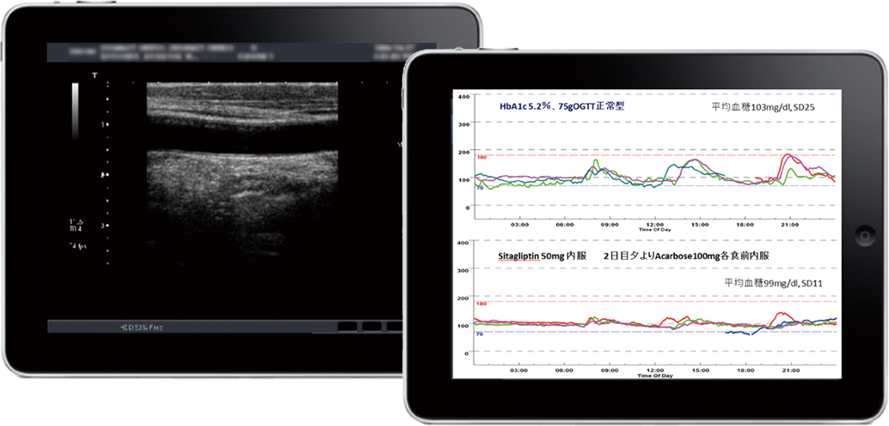
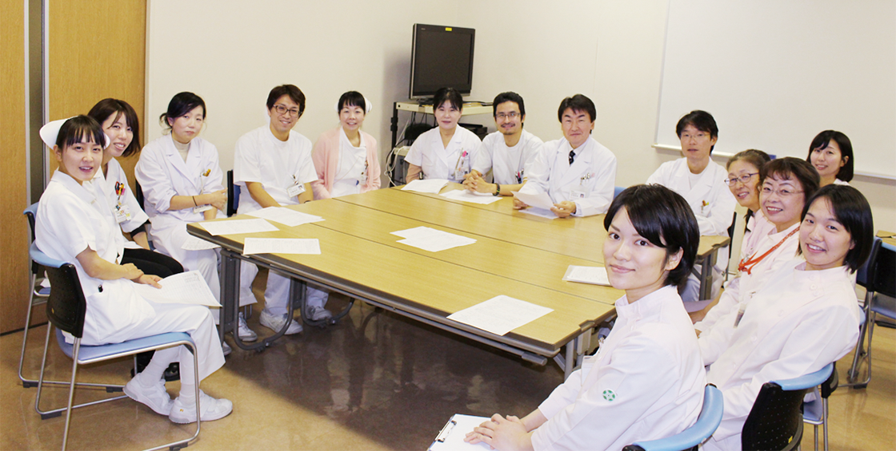
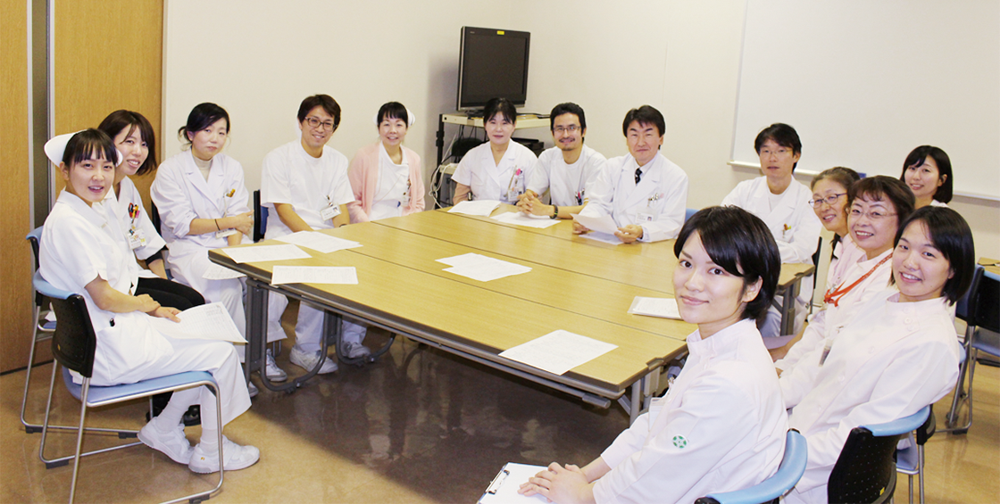

DM Trend Journal 31号
チーム力あり！ リーディングホスピタル
岡山済生会総合病院の糖尿病センターでは、糖尿病担当医8名を中心とした約50名のチームで年間1,600名を超える糖尿病患者さんをサポートしています。同センターは「チーム医療と医療連携を推進し、患者さんやかかりつけ医から選ばれる糖尿病センターをめざします」を理念として掲げ、多くの取り組みをチームで実践しています。その取り組みをうかがいました。
岡山済生会総合病院は、岡山市とその周辺地域の医療を担う中核病院として、積極的な活動を続けています。糖尿病センターは、中塔辰明先生を中心にした専門医と糖尿病療養スタッフ約50名(看護師21名、管理栄養士8名、薬剤師5名、理学療法士2名、臨床検査技師2名、医療ソーシャルワーカー1名、保健師8名。うち19名がCDEJの資格を保有)が所属しています。チーム医療を推進している同センターは「患者さんの健康とQOLの向上」を共通のゴールとし、「チームならできる!」を合言葉にチーム力を活かして活動されています。
力を入れている取り組みの一つに糖尿病教室があります。糖尿病教室は2週間コースを月曜~金曜の毎日、全19クラス (1クラス60分)、年間256日、のべ356時間開催しています。医師(糖尿病内科、腎臓病内科、循環器内科、眼科)をはじめ、8職種の糖尿病チームメンバーが講師をされ、それぞれの専門性(良さ)が結集された工夫いっぱいの糖尿病教室になっています。同病院の糖尿病教室は講義だけでなく、対話や体験を取り入れているところが特徴です。例えば体験型の教室にはフットケア教室があり、実際に患者さんに“足を見て、触って、洗って”もらい、自分の足と向き合い“足を大事にしたい”と思う気持ちが湧くような内容になっています。この教室に参加されている患者さんからは「自分の足を今までじっくり見たことがなかった」「こんなにも足から垢がでるなんて」などの声があがり、講義とは一味違う活気のある教室が展開されます。また対話型の教室にはツールとしてカンバセーション・マップを用いており、参加者同士の会話を活かしながら、糖尿病とともに生活していくために必要な知識や対処方法が学べるように工夫されています。また、この教室では知識や対処方法を学べるだけでなく、医療者や患者さん同士の会話を通して「悩んでいるのは自分だけではない」「仲間や支援者がいる。一人ではないから頑張ろう」「そのようなやり方もあるんだ」と療養上の悩みを分かち合うことができ、療養の工夫を見出せる教室になっています。
2008年からは昼間に参加できない患者さんやそのご家族を対象に、前期と後期に各4回、月に1回のペースで夜間糖尿病教室『フライデイ・ナイト』が金曜日の夜に開催されています。夜間糖尿病教室では糖尿病治療や療養に関する最近の話題(例えば糖尿病と認知症、糖尿病と時間栄養学、新しい糖 尿病治療薬など)をたくさん取り入れており、そのテーマに そって脳外科、呼吸器内科の医師や臨床心理士など糖尿病チーム以外のスタッフにも講師を依頼されているそうです。そのため患者さんだけでなく、糖尿病チームメンバーも患者さんと一緒に聴講し、患者さんとともに学ぶ場になっています。
「フライデイ・ナイト『夜間糖尿病教室』」他科の医師による講演は患者さんだけでなく、チームメンバーにとっても貴重な情報源になっている

看護外来室 主任看護師
慢性疾患看護専門看護師
佐藤 真理子さん
栄養科 科長
森 美和子さん

糖尿病センター長
県庁内診療所長
中塔 辰明先生
『1型糖尿病を語り合う女子会』は、「看護外来で支援している1型糖尿病を抱える女性患者さんから“同じ病気を抱える人と話がしたい”“いろいろな悩みをどのように解決、対処しているのか話を聞きたい”などという声から生まれました。1型糖尿病を抱える女性患者さんは思春期、青年期(妊娠、出産)、壮年期といったライスステージごとに生じる身体的心理的な苦悩だけでなく、育児や介護などに対して苦悩を抱えている人も多く、一人では解決困難な状況にあります。同じ病気だからこそ分かり合える“仲間づくりの場”としてこの女子会が発足されました」と、会がつくられた経緯を佐藤慢性疾患看護専門看護師は説明されました。この女子会では涙あり、 笑いありで、ありのままに感情を表現することができ、会が終わる頃には「一人ではない」「分かり合えて嬉しかった」「明日からまた頑張れる」と笑顔になり、穏やかな空気が流れるそうです。現在は、次の開催が待ち遠しいといった声も聞かれるほどの人気で、糖尿病チームメンバーもその反応を喜んでいるそうです。

患者さんに気づきを促すワールド・カフェ方式の患者会
 
クラウドを使ったグループウェア「クラウド糖尿病教育資材共有システム」は手軽に情報を得られると好評
佐藤慢性疾患看護専門看護師は、チームの強みについて、 1)チームメンバー間の風通しがよく、コミュニケーションが 良好なこと、2)問題点に気づいたらお互いに連絡を取り、そ れぞれの強みを活かしてサポートする仕組みが浸透している ことを挙げています。その結果、一人では対処できないよう な問題でもチームで取り組むことによって解決でき、さらに 予期しない“創発的な産物”が生まれる、とチームの強みをア ピールされます。
 

また、糖尿病センターのチームには、臨床検査技師でもある「メディカルアシスタント」というスタッフが内科外来に常駐しています。メディカルアシスタントはCDEJを取得しており、外来における診療補助、療養支援、啓発活動など、あらゆるシーンで患者さんのサポートをしています。診察室で耳にした患者さんの抱えている不安などの情報を栄養指導室や看護外来室のメンバーに伝え、栄養指導室や看護外来室での支援内容を医師へ報告するなど、患者さん目線からの必要な情報を医療スタッフにつなぐ潤滑油的存在として、チーム医療には欠かせない存在となっています。
チーム内の信頼関係は、院内で毎週水曜日に開かれる「糖尿病カンファレンス」での情報共有や対話のなかでも育まれています。個々の患者さんの症例検討では、さまざまな職種のスタッフが積極的に意見や情報を交換しながら、中塔センター長のもと、患者さんの治療の方向性を統一してチームの足並みを揃えています。

チームメンバーの専門性（良さ）が結集された工夫いっぱいの糖尿病教室のプログラム
DM Trend Journal 31号
Clinical Talk[特集]低血糖、高齢者でのリスク高齢者の低血糖リスクとその対策
チーム力あり！ リーディングホスピタルめざすは『患者さんの健康とQOL向上』
患者さんの行動変容とこころを支えるチーム力
CDE room水本千代子さん (2001年CDE資格取得)
Q&A あなたならどうする？独居の高齢者で理解力が低下している患者さんにインスリン導入を行う場合、正しい注射の手技や内容、SMBGを指導するにはどうすればよいでしょうか?
CDEのための学会レポート「第18回 日本病態栄養学会年次学術集会」レポート
Backnumber

第39号

第37号

第36号

第33号

第32号
第31号